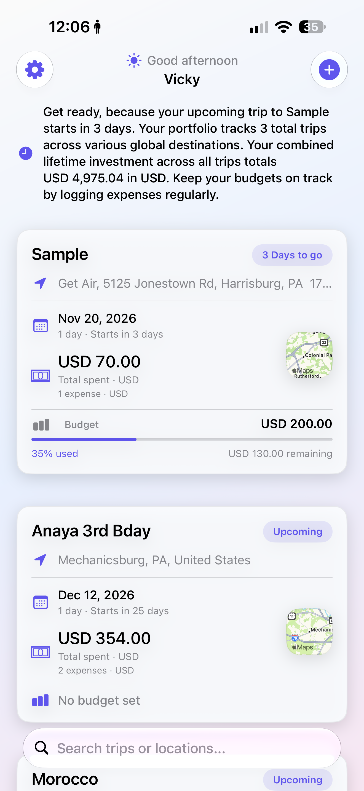

Plan Multiple Trips
Create trips with dates, locations (with map view), budget (optional), and currencies.
TripMate
iOS App · Under Development
Track travel budgets, manage multi-currency expenses live, and monitor phase spending all in one place.

Create trips with dates, locations (with map view), budget (optional), and currencies.
Log expenses with title, amount, date, and currency. Expense titles auto-format to title case.
Add/Edit expense screens show a live 4-line exchange panel when entered currency differs from home currency.
Set budget in home currency, auto-convert for trip analytics, and get live remaining-per-day guidance in Trip Details.
Visualize spending by pre-trip, during-trip, and post-trip phases.
Trip and expense records are stored on device using SwiftData.
A native iOS application using SwiftUI, MapKit, and SwiftData local persistence.
Your data, stored on your device
TripMate Privacy
Learn how TripMate handles your data and protects your privacy.
Your privacy is important to us. This Privacy Policy explains what TripMate stores and when the app may access network services.
TripMate stores trip and expense records locally on your device using SwiftData. This can include:
Location access is optional and used only for map preview and destination search flows when you grant permission.
Currency conversion may use network providers (currently frankfurter.app with open.er-api.com fallback) to fetch exchange rates. Requests include currency codes needed for rates; trip records are not uploaded as part of conversion requests.
TripMate does not require account sign-in and does not run third-party ad tracking.
You can edit or delete your data at any time. Using “Clear All Data” permanently removes trips and expenses from this device.
Your trips and expenses stay on your device.